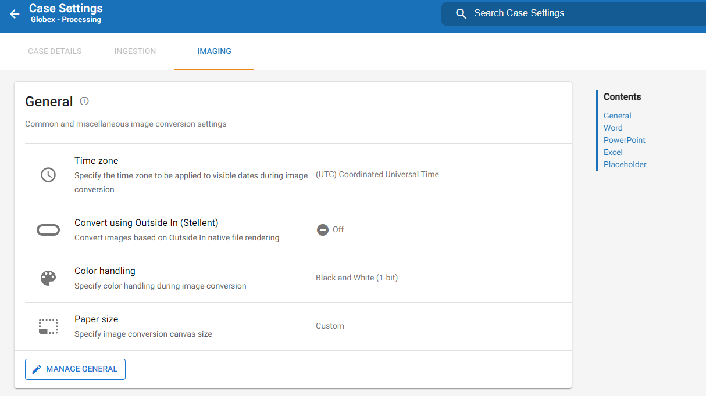

Note: These processing case settings apply to Streaming Discovery options only. Standard Discovery options must be configured within the eCapture Controller.
You can customize an array of settings for your Processing cases within the Case Management module of

|
|
Note: These processing case settings apply to Streaming Discovery options only. Standard Discovery options must be configured within the eCapture Controller. |
View the topics below to learn more about how to configure processing settings in